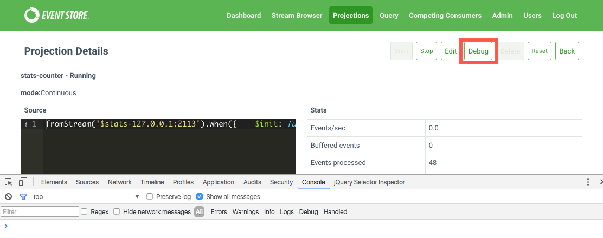
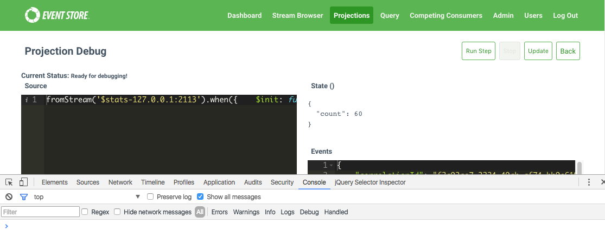

Debugging
User projections you create in JavaScript have a bonus that debugging is easier via any browser that ships with debugging capabilities. The screenshots in this document show the use of Chrome, but we have tested debugging with all major browsers including Firefox, Edge and Safari.
Logging from within a Projection
For debugging purposes, projections includes a log method which, when called, sends messages to the configured Event Store logger (the default is NLog, to a file, and stdout).
You might find printing out the structure of the event body for inspection useful.
For example:
fromStream('$stats-127.0.0.1:2113')
.when({
$any: function(s,e){
log(JSON.stringify(e));
}
})
Creating a sample projection for debugging purposes
Filename: stats-counter.json
Contents:
fromStream('$stats-127.0.0.1:2113')
.when({
$init: function(){
return {
count: 0
}
},
$any: function(s,e){
s.count += 1;
}
})
You create the projection by making a call to the API and providing it with the definition of the projection.
curl -i -d@stats-counter.json http://localhost:2113/projections/continuous?name=stats-counter%26type=js%26enabled=true%26emit=true%26trackemittedstreams=true -u admin:changeit
Debugging your first projection
Once the projection is running, open your browser and enable the developer tools. Once you have the developer tools open, visit your projection URL and you should see a button labelled Debug.

After clicking the projection "Debug" button, you see the debugging interface with the definition of the projection and information about the events the projection is processing on the right hand side.
At the top there are couple of buttons to take note of, specifically the Run Step and Update buttons. You use Run Step to step through the event waiting in the queue, placing you in projection debugging mode. The Update button provides you with a way to update the projection definition without having to go back to the projection itself and leave the context of the debugger.

If the Run Step button is not greyed out and you click it, the browser has hit a breakpoint.

You are now able to step through the projection, the important method to step into is the handler(state, eventEnvelope) method.